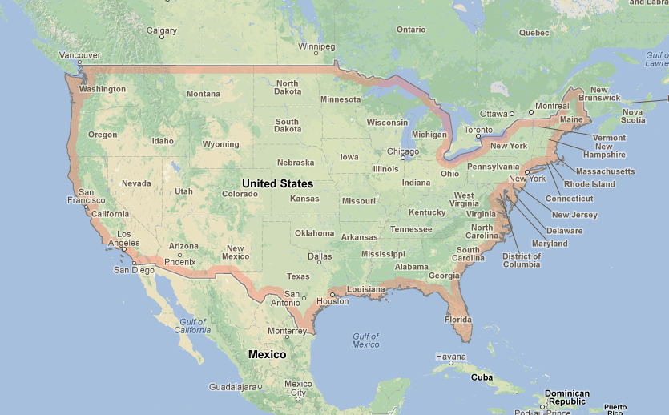
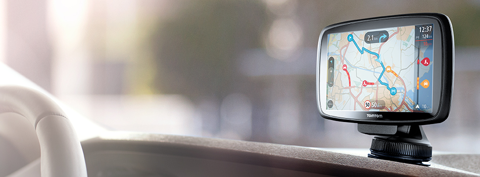
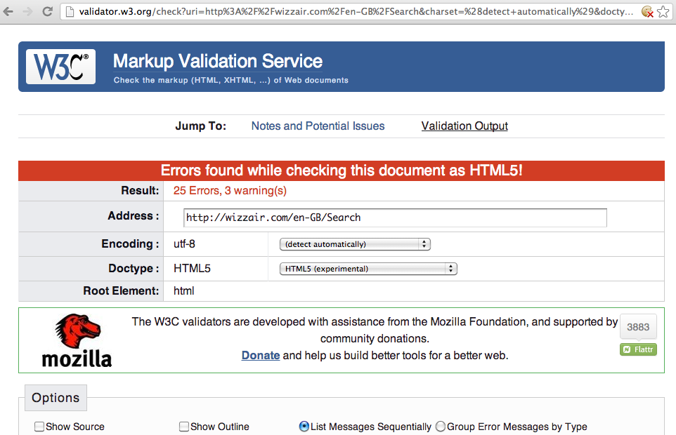
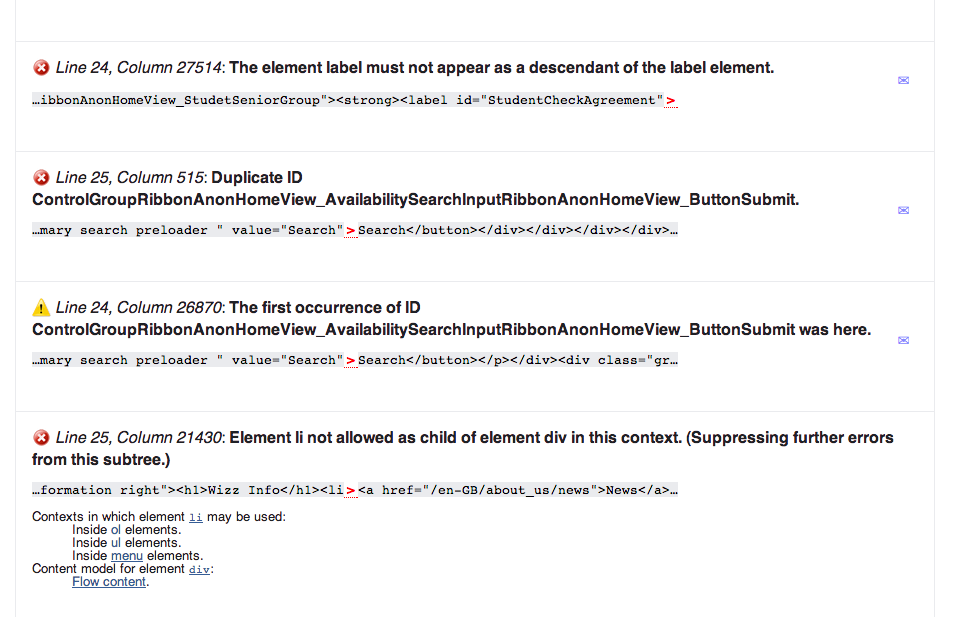
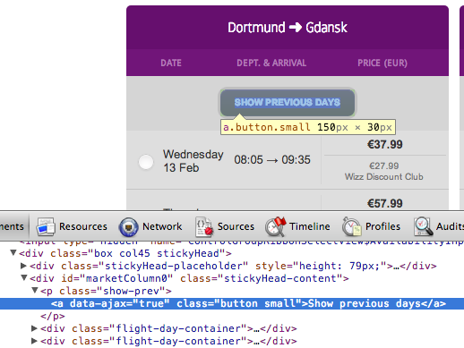
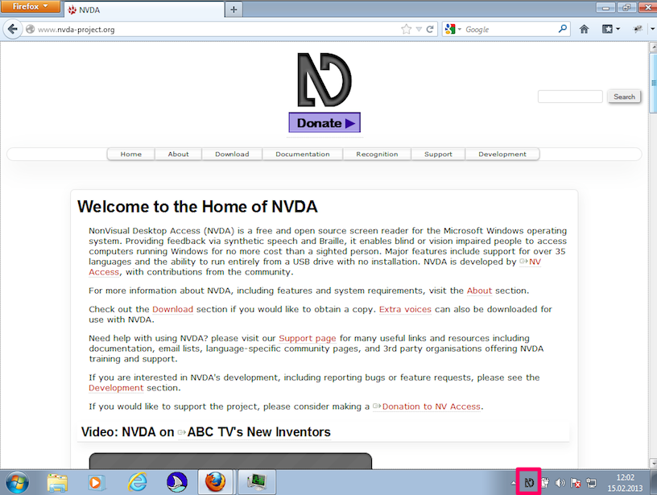
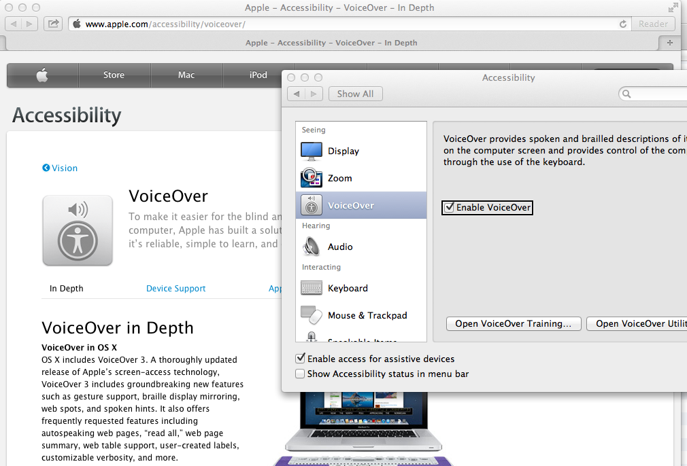
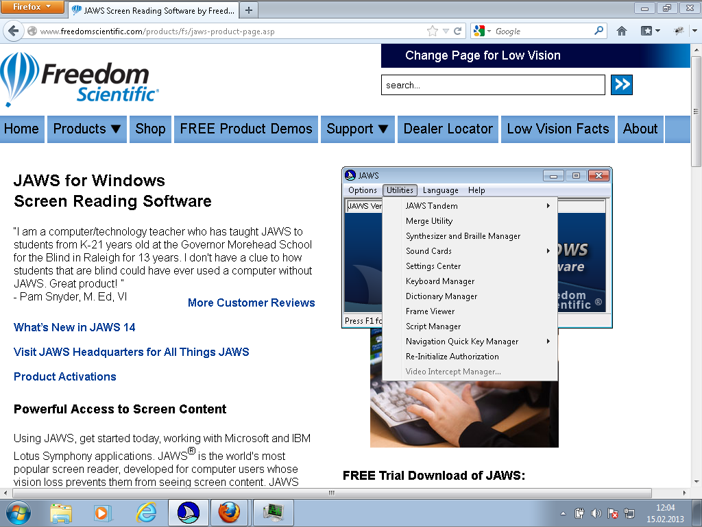

Talk to Me
Making websites accessible
Jörn Zaefferer


What do you "see"?
Convince your boss
Accessibility is important, like user experience and security
1. Boost your user experience
Accessible websites are more usable for everyone
2. Support powerusers
Keyboard access for everyone
3. More customers
When you can't leave home, shopping online is so much more useful.
4. It's the Law.
4. It's the Law. Or will be.
UN Convention on the Rights of Persons with Disabilities
Ratified in Poland on 25 Sep 2012.
5. It's the right thing to do.
Golden Rule: "One should treat others as one would like others to treat oneself."
Convince your boss
Match and mix
- 1. Boost your user experience
- 2. Support powerusers
- 3. More customers
- 4. It's the Law.
How to test?
W3C Validator, Keyboard Testing, Screenreader Testing


Keyboard Testing
Put away the mouse, use tab key to navigate, try links, buttons, forms

Markup for links and buttons
Markup for content
Markup for forms
Testing With Screenreaders



Virtual Cursor
A speaking DOM tree!
Headers, Links, Forms, Landmarks
The GOTO of screenreaders
Specifying landmarks
with roles
Using live regions to announce screen changes
via aria-live and aria-atomic
Using live regions to announce screen changes
Make text changes!
accessible widgets, interactions, theming
Future of ARIA and jQuery UI
more coverage and alignment
Support the jQuery Foundation at jquery.org